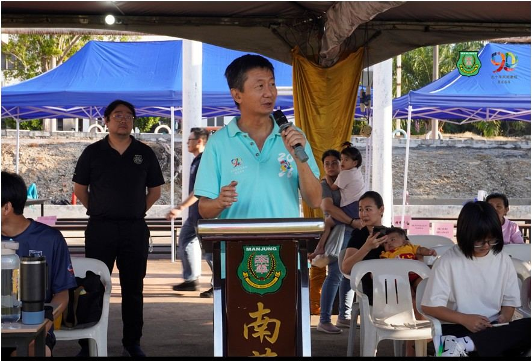
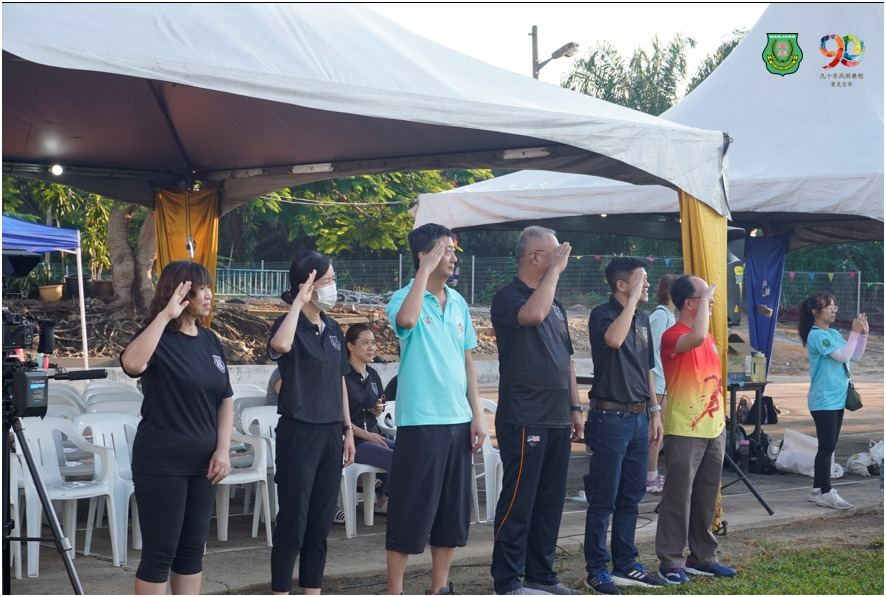
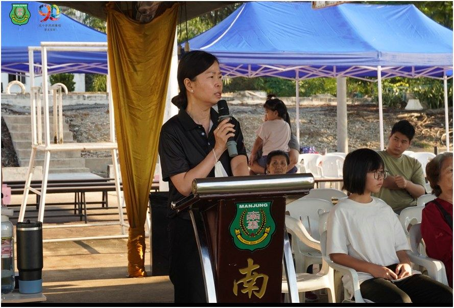
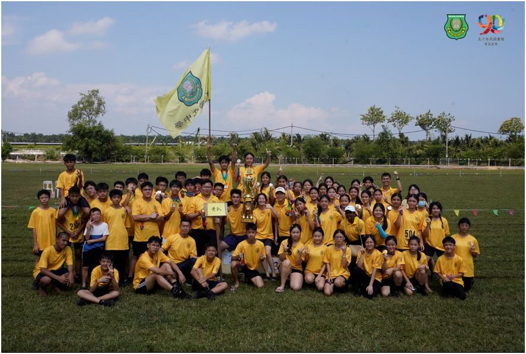
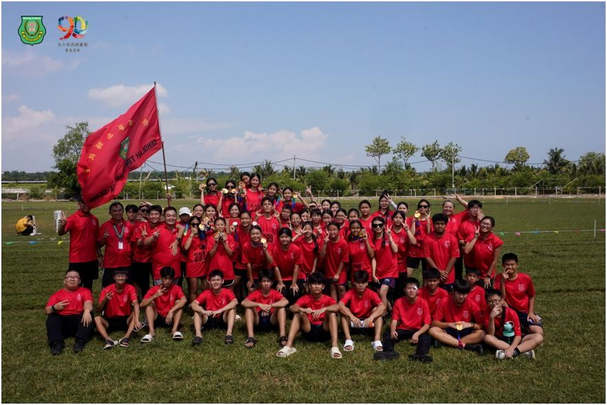
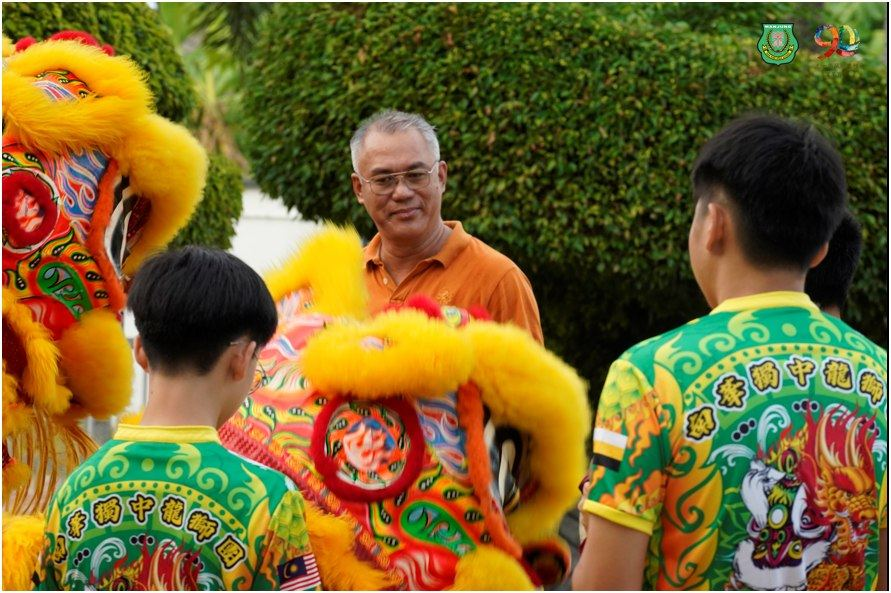
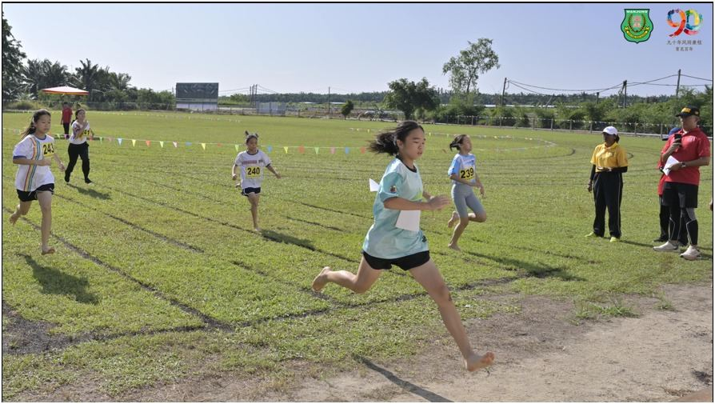

南华独中90周年校庆校运会特设小学田径邀请赛
南华独中90周年校庆校运会特设小学田径邀请赛
3大源流11所小学百名健儿聚首同台竞技
（曼绒15日讯）配合创校90周年系列活动，曼绒南华独立中学于6月13日隆重举行第23届校园运动会。本届赛会特别增设小学田径邀请赛，成功吸引曼绒县内华小、国小与淡小三大源流共计11所小学的百名健儿同台切磋。体育竞技在此成为跨越族群与体制的共同语言，展现了公平竞争与校园共融的精神。
践行“美美与共，天下大同”办学宏愿
董事长颜登逸先生在开幕致辞中阐述了学校的教育宏愿。他指出，在瞬息万变的AI时代，教育不仅需要培养学生适应剧变、不断自我调适的“核心进化力”，更需要构建包容多元的社会舞台。南华独中此次汇聚三大源流小学参与校运会，正是践行“美人之美，成人之美，美美与共，天下大同”的理念。体育不分体制与肤色，各校通过赛会展示自身的体育之美（美人之美），在竞技中成就彼此的成长（成人之美），最终在多元文化的交织中实现和谐共荣（美美与共）。同时，赛场幕后的音响系统、摄影团队、场地评判等岗位均由学生独立承担，亦是学生发掘潜能、演练团队协作力的实操舞台。
AI时代思辨 · 科技无法取代的身体意志
校长陈丽冰博士则立足于学校课改的前瞻视野，剖析了现代科技背景下体育教育的不可替代性。她强调，在人工智能重构社会逻辑的当下，知识的获取已极为便利，但体育教育所赋予的生命力量是算法永远无法模拟的。
南华独中坚持深化体育课程改革，核心目的在于培育学生健全的人格。陈校长指出，学生在赛道上咬紧牙关、奋力冲刺的坚韧意志，以及面对失败时重新站起的心理韧性，才是科技时代最稀缺且无法被取代的核心素养。本届运动会不仅是竞技的展现，更是学校在90周年节点上关于“生命的成全”与“人格的塑造”的深度实践。
赛事纪事：各队全力以赴 黄队摘全场总冠军
赛会过程井然有序，各色队运动健儿在田径赛场上展开了角逐。红队在田赛和加分赛阶段表现抢眼，积分一路领先；蓝队始终以个位数分数的差距紧咬在后；黄队则在随后的径赛项目中展现了极佳的团队配合，最终凭借积分优势后来居上，夺得本届校运会全场总冠军。
全场最佳男运动员：张梓乐
全场最佳女运动员：陈佳纹
男甲最佳表现奖：张梓乐
女甲最佳表现奖：张惠欣
男乙最佳表现奖：何子深
女乙最佳表现奖：陈佳纹
━━━━━━━━━━━━━━
🏅 2026 南华独中 曼绒县小学田径邀请赛 @ 成绩榜 🏅
━━━━━━━━━━━━━━
🏃♀️ 100M · 小学女生组
🥇 李苠雅（育英华小）
🥈 林荟忻（爱大华华小）
🥉 徐芯洁（爱大华华小）
🏃 100M · 小学男生组
🥇 林克杨（格尼市华小）
🥈 纪靖安（育智华小）
🥉 Lim Rong Shuh（直民华小）
━━━━━━━━━━━━━━
🏃♀️ 200M · 小学女生组
🥇 李苠雅（育英华小）
🥈 徐芯洁（爱大华华小）
🥉 Tan Li Ting（直民华小）
🏃 200M · 小学男生组
🥇 Dave Tan Yen Xu（直民华小）
🥈 王宜渗（爱大华华小）
🥉 王宜楷（爱大华华小）
━━━━━━━━━━━━━━
🏃♀️ 4×100M 接力 · 小学女生组
🥇 SK Pangkalan TLDM II
🥈 SK Seri Selamat
🥉 爱大华 华小
🏃 4×100M 接力 · 小学男生组
🥇 甘文阁国民 华小
🥇 SK Seri Selamat
🥈 格尼市 华小
🥉 育英 华小
━━━━━━━━━━━━━━
🏃♀️ 4×200M 接力 · 小学女生组
🥇 育英 华小
🥈 直民 华小
🥉 SK Pangkalan TLDM II
🏃 4×200M 接力 · 小学男生组
🥇 育英 华小
🥈 SK Pangkalam
🥉 爱大华 华小
━━━━━━━━━━━━━━
🎉 恭喜所有得奖运动员！







